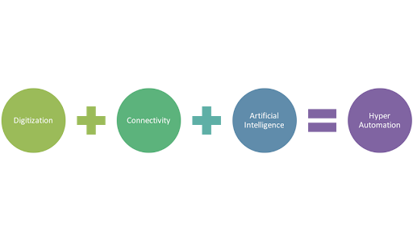

Hyper-automation
Hyper-automation allows organisations and enterprises to automate complex and diverse work that originally required human interaction. Hyper-automation essentially deals with the application of advanced technologies artificial intelligence and machine learning to increasingly automate processes and augment humans. When we think of automation, theories such as robotic process automation come to mind but, hyper-automation takes an ecosystem of technologically advanced tools and combines them to create a new way to work. It means that low-value tasks are optimally performed with automation tools, machine learning and advanced artificial intelligence so that outputs can be produced automatically and run efficiently with little to no human intervention. Then, together with humans, hyper-automation can create a workplace that is always informed, agile and able to use data and insights for quick and accurate decision-making. Collectively, hyper-automation and human augmentation creates an atmosphere surrounding modernised intellect. Interacting with the hyper-automated abilities at hand provides enterprises and organisations with advanced analytics, increased employee satisfaction and motivation, greater compliance and reduced risk and intense employee collaboration.
Multi-experience
Multi-experience development platforms (MXDPs) help enterprises to rapidly scale their applications across a range of devices and platforms. Multi-experience development platforms can help you develop a single application that can be deployed on a variety of devices. This greatly condenses your efforts and gives brands more control over their digital experiences. Multi-experience enables organisations to create efficient, faster, and valuable digital experiences. It can significantly improve research and development practices timing by as much as ten times. With multi-experience development, you can get a 360 view of your software landscape. This can eliminate all the potential security risks like shadow I.T. that many organisations and enterprises struggle with. According to a recent survey conducted by Gartner, as user application touchpoints increase in frequency, change in modalities and expand in device type, the future of app development is multi-experience. Development platforms are raising the bar even higher. They are experimenting, creating, and delivering next-gen user experiences such as Augmented Reality (AR) and User Interfaces (UIs) that are conversational. Slowly, businesses are realizing the need and importance for tailor-made user experiences that are created keeping in mind both the need as well as the mode of user interaction. This has changed the way development platforms function today.
Distributed Cloud
A distributed cloud refers to having computation, storage, and networking in a micro-cloud located outside the centralized cloud. Examples of a distributed cloud include both fog computing and edge computing. Establishing a distributed cloud situates computing closer to the end user, providing decreased latency and opportunities for increased security. Potential security solutions include a blockchain-based security architecture or random auditing of data to check for integrity. A distributed cloud also processes data in real-time. Since distributed clouds are local to the user, data only has to travel a short distance to the compute, storage, or network resources. This means less data is going greater distances to large data centres or centralized clouds, and there is an overall decrease in network traffic congestion. A distributed cloud can reduce the strain of wearable devices on the core network, because data from those devices doesn’t have to go as far to get to the necessary server for data storage and processing, minimizing the use of network infrastructure. Cloud computing allows users to scale services to fit their needs, customise applications and access cloud services from anywhere with an internet connection. While providing flexibility, distributed cloud allows incorporates efficiency into an enterprise’s regime. Organisations can get applications to market quickly, without the worry of underlying infrastructure costs or maintenance.
Learn more about Distributed Cloud